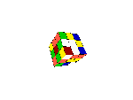
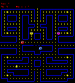

There is two classical games implemented by Matthieu Carlier.
 To twist the cube, press the keys 'q', 'w', 'e', 'a', 's', 'd', 'z', 'x' or 'c'.
 controls: Left: 'h' or 'o' Right: 'k' or 'p' Top: 'u' or 'a' bottom: 'j' or 'z' quit: 'q'